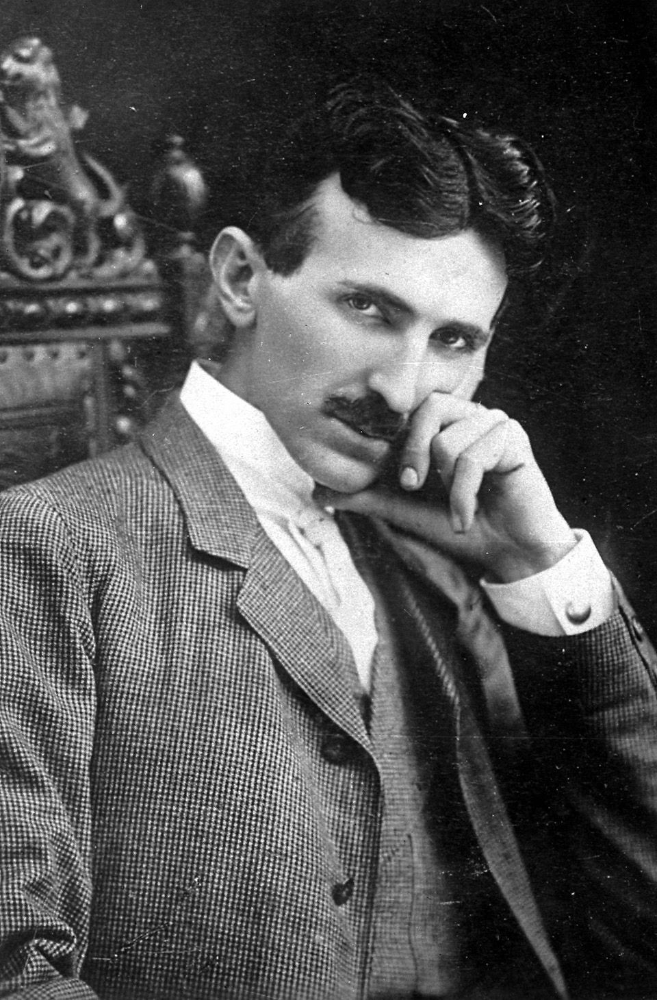
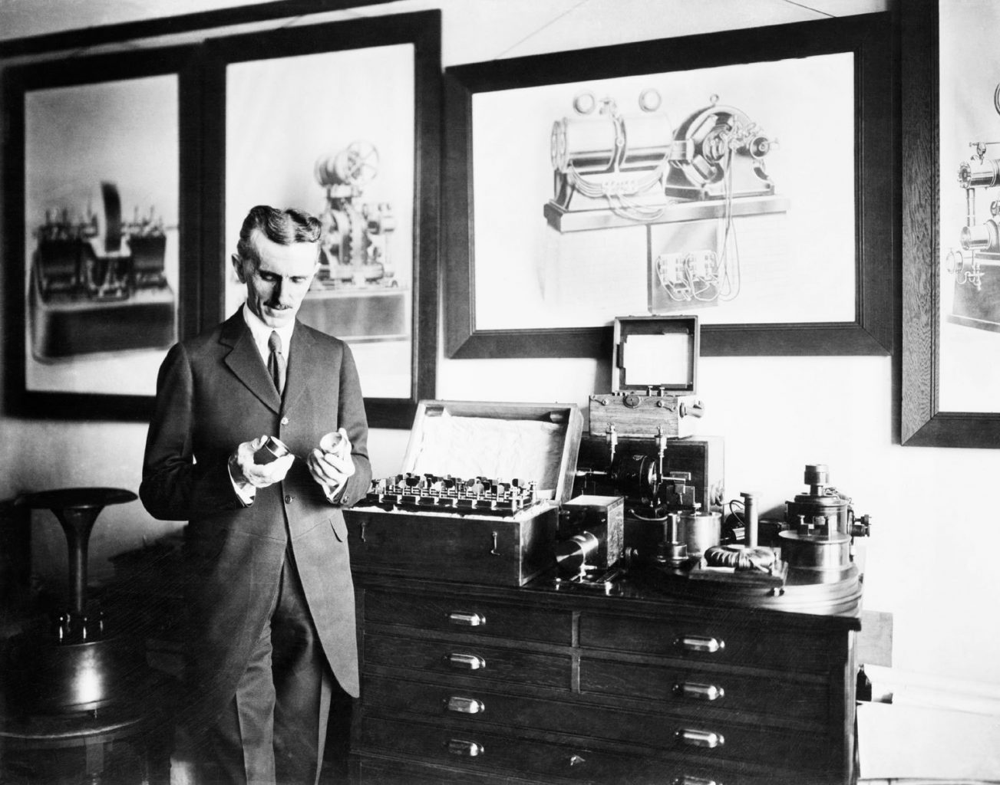

Nacimiento: 10 de julio de 1856 en Smiljan, Imperio austríaco (actual Croacia).
Educación: Estudió ingeniería eléctrica en la Universidad Técnica de Graz y en la Universidad Carolina de Praga.
Carrera profesional: Inventor y pionero en la corriente alterna; desarrolló el motor de inducción y la bobina de Tesla.
Contribuciones: Diseñó sistemas eléctricos revolucionarios y exploró tecnologías inalámbricas.
Familia: Hijo de Milutin Tesla, un sacerdote ortodoxo, y Đuka Mandić, una mujer de gran ingenio.
Fallecimiento: 7 de enero de 1943 en Nueva York, Estados Unidos, a los 86 años.
Nikola Tesla fue un inventor y visionario nacido el 10 de julio de 1856 en Smiljan, en el entonces Imperio austrohúngaro (actual Croacia). Es conocido por sus contribuciones revolucionarias al desarrollo de la corriente alterna, el motor de inducción y la bobina de Tesla, entre otros inventos. Aunque no completó sus estudios universitarios, su genio lo llevó a trabajar con figuras como Thomas Edison, aunque posteriormente se distanció de él. Tesla colaboró con George Westinghouse para promover la corriente alterna, enfrentándose a la competencia de la corriente continua de Edison. A pesar de sus logros, enfrentó dificultades financieras y murió el 7 de enero de 1943 en Nueva York, dejando un legado que transformó la tecnología moderna. Su vida fue un reflejo de innovación y dedicación a la ciencia.
 Nikola Tesla vivió en una época de grandes avances tecnológicos y científicos, marcada por la Segunda Revolución Industrial. Durante el siglo XIX y principios del XX, el mundo experimentó una transformación en la producción y distribución de energía, con la electricidad como protagonista. Tesla fue un pionero en este campo, enfrentándose a figuras como Thomas Edison en la famosa "Guerra de las Corrientes", donde defendió la corriente alterna frente a la continua. Este periodo también estuvo caracterizado por la expansión de las comunicaciones y el inicio de la globalización, lo que permitió que sus ideas innovadoras tuvieran un impacto duradero en la tecnología moderna.